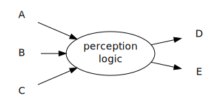

Ecto started in 2010 as a response to real architectural difficulties in computer vision and perception teams at Willow Garage. The main issue appeared to be that the preferred Model of Computation (MoC) of perception groups, namely dataflow programming in a single process, was difficult to implement using a distributed message passing framework (ROS).
For instance, given a data flow like this:

The “perception logic” part of the program needs a guarantee that the incoming sensor readings (kinect, webcam and laser) correspond to one another. It may additionally require that each observation be processed in sequence, e.g. that no sensor readings are dropped and that time-ordering is preserved over multiple iterations of the graph.
The perception logic itself may have arbitrary internal structure and require internal synchronization to function correctly. Consider a typical point cloud processing pipeline for tabletop segmentation:

The “Merge” operation will need to know that its two inputs correspond to the same original sensor data, regardless of how long e.g. the normal estmation or planar segmentation steps run. The ExtractClusters uses bounding boxes calculated in earlier steps to retrieve subsets of the original high density point clouds.
In an asynchronous, distributed publish-subscribe model (i.e. if each vertex in the graph above were a standard ROS node), there is no way to make such guarantees, and time synchronizers of various sorts tend to proliferate, essentially whereever one sees a vertex with multiple incoming edgess. This costing runtime and inflicing complexity on the researcher. In the case above, the “long” route through the graph may have a bottleneck midway through and run so slowly that input to the pipeline must be halted so that it processes only one point cloud at a time. In one implementation, the Merge operation published messages back to the PointCloudConstruction process indicating when it was safe to put more data into the pipeline. This, too, is an unsatisfactory solution: since each input is delivered by a different callback function, ROS “message filters” are still required.
Ecto makes a guarantee which simplifies this and many other scenarios:
given some program logic which processes inputs (A B C) and produces outputs (D E), Ecto warrants to program logic that A, B, and C correspond to the same original sensor data. The cell is required to produce output on all of its outgoing edges D and E.
Software architectures at this level of abstraction inhabit a high dimensional “design space”. As we will see, though they look superficially similar (that is, you can draw graphs of systems with processing at the vertices and data flowing along typed edges), the systems are quite different. They have different talents and enable different programming paradigms.
Fundamental to ROS is the notion of copyable “messages”, serializable to a single binary format. These messages may have only “value” semantics.
ecto has no notion of message or serialization. Connections between cells contain types unknown to ecto (it treats them all generically as “T”) and are simply copied, not serialized.
ROS: any language for which you can implement xml-rpc, message code-generators, and the ROS wire protocol. C++ and Python most significant, but Java, Lisp, Haskell and Lua implementations exist.
ecto: C++ and Python.
ROS is a wire protocol: nodes encode messages in a binary format that is compiled in to each node.
ecto has no inherent notion of protocol.
ROS is intended to support multiple types of transport between nodes (TCP, UDP, etc) through which serialized data flows as dictated by the protocol. The choice of transport layer determines the reliability of a given connection via flow control, segmentation/desegmentation, and error control.
ecto has no inherent notion of transport: data is copied between threads using whatever the C++ copy constructor does. Reference semantics are easily achievable (and copies avoided) by passing shared pointers. In this case, ecto requires that the user not modify data that is possibly visible to other cells in the graph; ROS does not need to require devlopers to think about this as messages have value semantics and are always copied.
ROS: the publish-subscribe model requires manual synchronization by the user. Some generic synchronization subscribers exist (e.g. message_filters) that attempt to synchronize data; the user manually inserts these where they deem synchronization necessary.
ecto: each input to each cell is guaranteed by the scheduler to contain data corresponding to the same “tick” of data, regardless of the structure of the graph.
ROS: messages can be dropped if queues fill up.
ecto: once data has entered the graph, it is never dropped.
Sets of ROS processes (nodes) are typically controlled by xml “launch” files: python scripts load these xml files, examine the runtime environment (e.g. ROS_PACKAGE_PATH) and execute/monitor multiple OS processes.
ecto uses a small DSEL, hosted in python, for graph construction and execution ecto graphs are always run in a single process.
The ROS‘ “master” serves to connect publishers and subscribers to one another, but does not participate in the traffic of each individual message between nodes. It has no instantaneous global knowledge of what is happening in a running ROS system.
The ecto “scheduler”, being responsible for executing each processing “cell” in the graph, has complete visibility, at all times, into the state of the graph and the data flowing through it. This enables the crucial synchronization-guarantee and an assortment of scheduling and optimization strategies.
ROS is an acronym
ecto is a greek prefix.
ROS names its releases after turtles,
ecto has a lighthearted nomenclature with release names based on things slimy, amorphous, or paranormal.
ecto cells are self-documenting and have a consistent interface. This significantly simplifies code reuse and collaborative development.
ecto cells can be seamlessly executed with various threading models due to the scheduler. The user constructs singlethreaded cells that obey simple rules: they get multithreaded execution for free. We have watched many a researcher waste time struggling with threading issues rather than focusing on the valuable issues: techniques, algorithms, and results.
Developers get use of python bindings and the graph construction/configuration language “for free”, i.e. without doing any manual python integration.
Ecto graphs naturally express a type system one level “up” from that of C++: a textured object detector, for instance, takes a point cloud as input and produces a list of object identifiers and poses as output. Such interfaces appear naturally in ecto systems and make it straightforward to exchange components without recompiling.
Ecto graphs can run
Ecto serves as a hardware abstraction layer in the same way ROS does. It also serves as a ROS abstraction layer. Because these layers are entirely decoupled from the ecto core, implementing new abstraction layers is straightforward.

{kind=link}